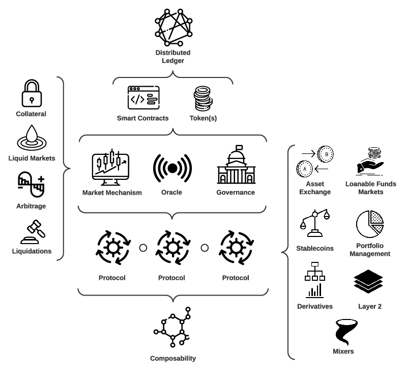

class: middle, title-slide
# Introduction to DeFi
## Daniel Perez
Imperial College London
Slides available at: http://bit.ly/intro-to-defi
---
# Overview
1. Introduction
2. Building blocks
3. Protocol types
4. Security
5. Challenges
---
class: middle, title-slide
# Introduction
---
# What is DeFi?
Decentralized Finance is a peer-to-peer powered financial system.
Four properties:
- Non-custodial
- Permissionless
- Auditable
- Composable
---
# Views on DeFi
## DeFi Optimist
> DeFi amounts to a breakthrough technological advance, offering a new financial architecture that is non-custodial, permissionless, openly auditable, (pseudo)anonymous, and with potentially new capital efficiencies.
## DeFi Pessimist
> The unregulated, hack-prone DeFi ecosystem serves to facilitate unfettered and novel forms of financial crime. Pseudo-anonymity permits cryptocurrency attackers, scammers, and money launderers to move, clean, and earn interest on capital.
---
# "To the moon"
.text-center[

.caption[
Total Value locked in DeFi over time, expressed in USD (source: [DeFi Pulse](https://defipulse.com/))
]
]
---
# Hacks in DeFi
Currently over 2.2B hacked out of DeFi
* Grim Finance: 77M
* Badger: 120M
* Cream Finance: 19M
* Poly network: 268M
* Rari capital: 15M
* Uranium Finance: 50M
---
class: middle, title-slide
# Building blocks
---
# DeFi building blocks
Features of the underlying blockchain layer which have
particular relevance to DeFi protocols:
* Smart contracts
* Tokens
* Oracles
* Keepers
* Governance
---
# Smart Contracts
.pull-left-50[
* Programs deployed on a blockchain
* Usually written in a high-level language and compiled into bytecode
* Interacted with using transactions
* Uses some metering mechanism
]
.pull-right-50[

.caption[
Ethereum Smart Contracts overview]
]
---
# Tokens
Tokens can bde divided in
* Fungible - any two tokens are equivalent
* Non-fungible - each token is typically unique
Fungible tokens are used for pretty much every single type of accounting within DeFi
* Native DeFi currencies express balances in tokens
* Pools keep track of users share in the pool using tokens
---
# Oracles
A blockchain cannot read external data. To work around this issue, oracles are usually used.
Oracles are programs that are used to provide on-chain access to off-chain information.
They can be used to store various information such as:
* Access price data
* Access other kind of API data (e.g. weather)
---
# Keepers
Keepers are typically off-chain programs that track on-chain state and execute actions.
Keepers can be used for many different things:
* Arbitrage
* Liquidations
* Oracles
---
# Governance
DeFi protocols are often designed to end up being "governed" by the community.
Governance mechanism typically allow users to vote on things such as:
* Changes in protocol security parameters
* Changes in protocol rewards
* Update in the protocol functionality
---
class: middle, title-slide
# Protocol types
---
# DeFi: An Overview
.text-center[

]
---
# Types of DeFi protocols
* On-chain Asset Exchange
* Loanable Funds Markets for On-chain Assets
* Stablecoins
* Portfolio Management
* Derivatives
* Privacy-preserving mixers
---
# On-chain Asset Exchange
A class of DeFi protocols that facilitates the non-custodial exchange of on-chain digital assets exists in the form of decentralized exchanges (DEXs).
* Order book DEXs
* Open orders as presigned transactions
* Orders are matched manually or algorithmically
* Automated market makers (AMMs)
* Liquidity is provided algorithmically through simple pricing rules with on-chain liquidity pools in place of order books
* Deterministic prices
* Changing deposit ratios for liquidity providers
---
# Loanable Funds Markets for On-chain Assets
Protocols for loanable funds (PLFs) establish distributed ledger-based markets for loanable funds of cryptoassets (e.g. Compound or Aave).
* Deposits for a given market are pooled together in a smart contract
* Agents borrow directly against the smart contract's reserves
* Interest rate models determine cost of borrowing
* Loans are generally overcollateralized
* Flash loans: undercollateralized loans for the duration of a single transaction
---
# Stablecoins
Non-custodial stablecoins are cryptoassets which aim to be price stable relative to a target currency, commonly the USD, and seek to achieve this via additional economic mechanisms (e.g. DAI).
* Collateral as a store of primary value
* Agents as stablecoin users and for risk absorption
* Governance mechanism to set parameters that govern the protocol as a whole
* Issuance mechanism of stablecoins
* Oracle to import external data onto the blockchain (e.g. price-feeds)
---
# Portfolio Management
Protocols that automate the management of on-chain assets by serving as decentralized investment funds, whereby smart contract deposits are allocated via investment strategies to external protocols.
* Management may differ in complexity (e.g. simple rebalancing vs yield maximization strategy)
* Interest, fees and token rewards
* Smart contract encoded investment strategies of on-chain assets are tailored around yield generating mechanisms of different protocols
---
# Derivatives
A contract which derives its value from the performance of an underlying asset.
* Synthetic assets typically replicate off-chain assets on-chain (e.g. the USD in protocols like
* Futures have seen little adoption in DeFi (for now)
* Perpetual swaps (similar to futures but with no set expiry date or settlement) were specifically created and popularized for cryptoasset markets
* Market for options in DeFi is very early (basic call and put options)
---
# Privacy-preserving mixers
Mixers are methods to prevent the tracing of cryptocurrency transactions using cryptographic protocols.
* Important to preserve user privacy
* Mixers construct a shielded pool of assets that are difficult to trace back before entering the pool
* Mix funds from a number of sources so that individual coins can’t easily be traced back
* Directly shield the contents of transactions using zero knowledge proofs of transaction validity
* Can be used by themselves or integrated by other protocols
---
class: middle, title-slide
# Security
---
# Technical Security
## Definition
A DeFi protocol is technically secure if it is not possible for an attacker to obtain a risk-free profit, at the expense of the protocol or its users, by exploiting the technical structure of the protocol, any interacting protocols, or the underlying blockchain.
## Implications
Technical security coincides with manipulating an on-chain system within a single transaction or multiple transactions within the same block.
---
# Smart Contract Vulnerabilities
Smart Contract Vulnerabilities are one of the most common cause of hacks in DeFi
* Reentrancy: Delegate control to an untrusted contract, by calling it with a large enough gas limit, while its state is partially modified
* Integer Manipulation
* Over- and -underflow
* Unit error during integer manipulation
* Logical Bugs: Simple programming errors in the smart contracts
---
# Single Transaction Attacks
Attacks which can be successfully executed, independent of knowing about some other pending transaction.
* Single Transaction Sandwich Attacks: An attacker manipulates an instantaneous AMM price in order to exploit a smart contract that uses that price
* Governance Attacks: An attacker may obtain an amount of governance tokens sufficient to propose and execute malicious contract code and steal a contract’s fund
---
# Transaction Ordering Attacks
Attacks which involve front- and/or back-running within a single block, thereby undermining the technical security of DeFi protocols.
* Displacement Attacks: An attacker front-runs some target transaction, where the success of the attack does not depend on whether the target transaction is executed afterwards or not
* Multi-transaction Sandwich Attacks: An attacker alters the deterministic price on an AMM prior to and after some other target transaction has been executed in order to profit from temporary imbalances in the AMM’s liquidity reserves
---
# Economic Security
## Definition
A DeFi protocol is economically secure if the protocol aligns incentives among all interacting agents such that nontechnical exploits are economically infeasible.
## Implications
Economic risks are inherently a problem of economic design and cannot be solved by technical means alone.
---
# Overcollateralization as Security
Collateralization is one of the primary devices to ensure economic security in a protocol.
* Overcollateralization is not without risks
* Persistent negative shocks to collateral asset prices can result in thin, illiquid markets, in which loans may become undercollateralized
* Unprofitable for liquidators to initiate liquidations
* Stablecoins can have deleveraging feedback effects that lead to volatility in the stablecoin itself (e.g. Dai on ‘Black Thursday’)
---
# Miner Extractable Value
The value a miner can extract from a block by being able to arbitrarily include, exclude and order transactions in a way that is beneficial to them.
DeFi applications give rise to many new sources of MEV
* DEXs present arbitrage opportunities between different trading pairs
* Stablecoins built on leverage markets (like Dai) present arbitrage opportunities in liquidating leveraged positions
* PLFs, that utilize liquidation mechanisms
* MEV can arise when miners are incentivized to re-order or exclude transactions based on crosschain payments happening on other chains
---
# Market and Oracle Manipulation
We need to distinguish between (1) a price that is manipulated yet correctly supplied by an oracle and (2) an oracle itself being manipulated.
* Market Manipulation
* An adversary may manipulate the price of an asset over a certain time period if a profit can be realized as a consequence of the manipulation
* Market manipulation problems persist even if the oracle is not an instantaneous AMM price
* High cost of market manipulation (both on-chain and off-chain)
* Oracle Manipulation}
* Centralized oracles as a single point of failure
* On-chain AMM-based oracles can be manipulated at ease
* Decentralized oracle solutions are imperfect solutions
---
class: middle, title-slide
# Challenges
---
# Open Research Challenges
There are many open research challenges in DeFi:
* Composability risks
* Governance
* Oracles
* Miner extractable value (MEV)
* Program analysis
* Anonymity and privacy